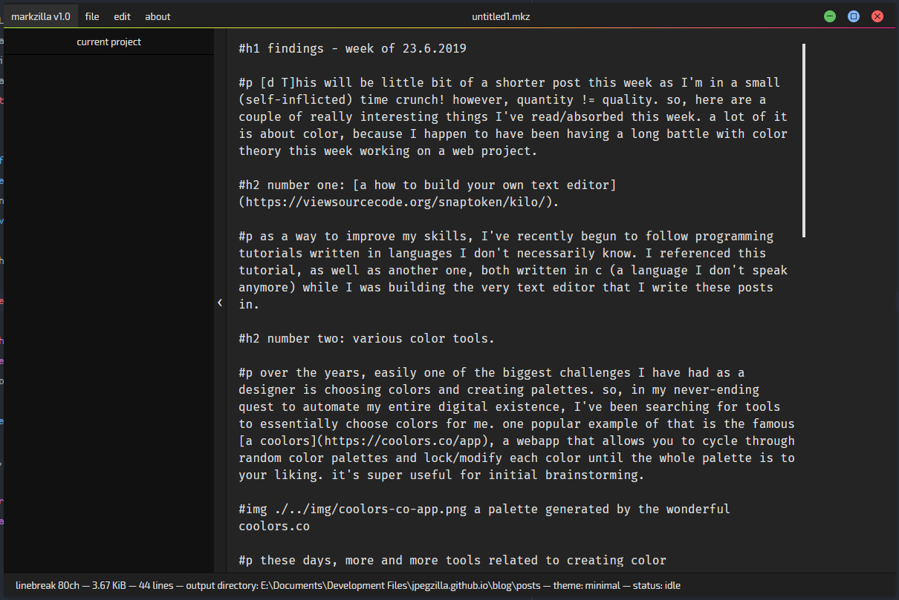
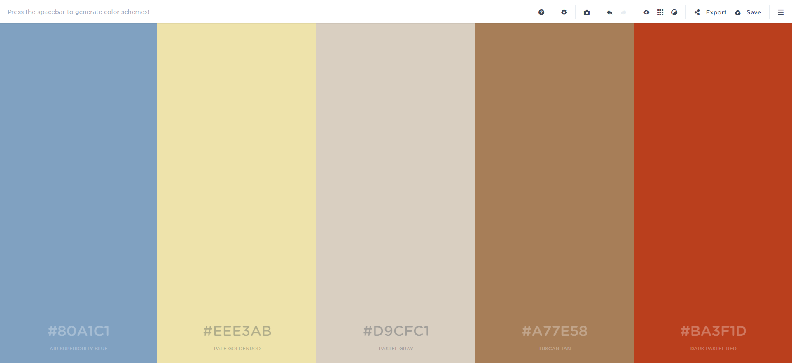
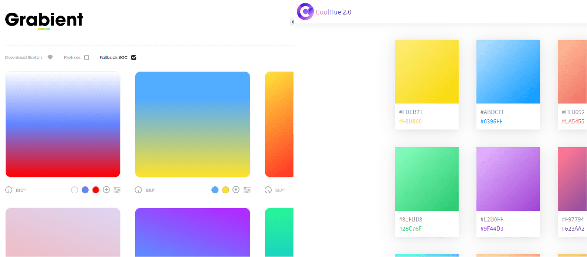
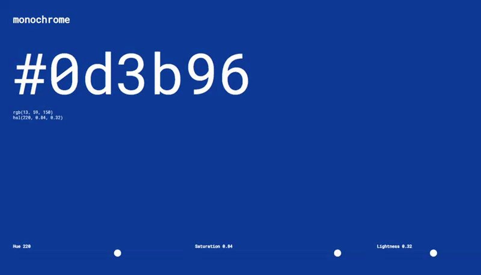
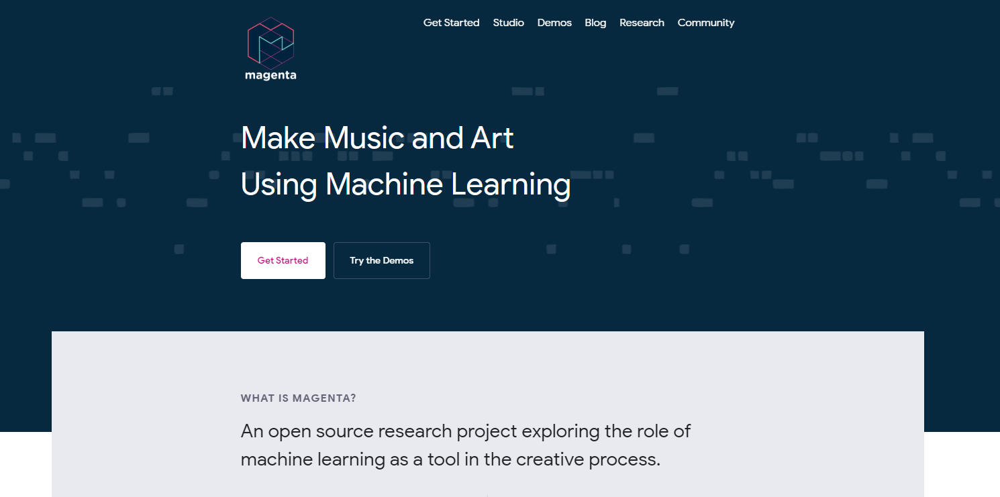
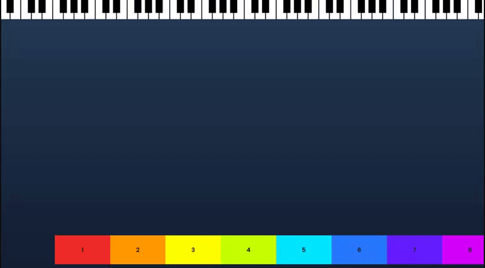
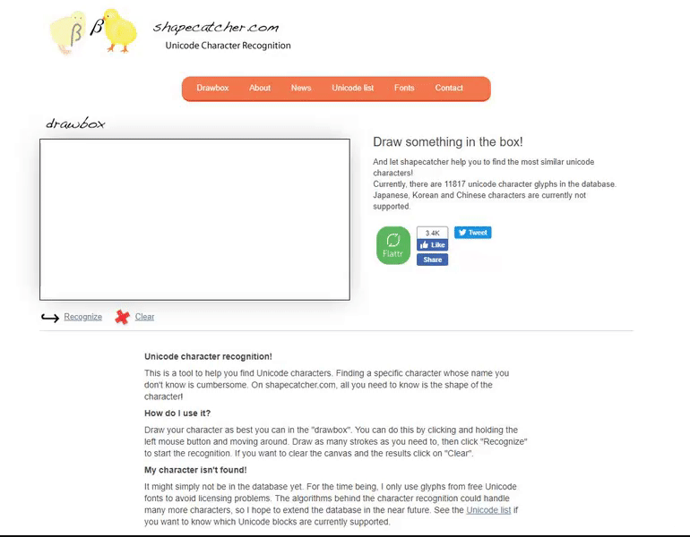

findings - week of 23.6.2019
This week, I found more things than I usually do, so here are some of the really interesting things I've read/absorbed this week! a lot of it is about color, because I happen to have been having a long battle with color theory this week working on a web project.
number one: how to build your own text editor.
as a way to improve my skills, I've recently begun to follow programming tutorials written in languages I don't necessarily know. I referenced this tutorial, as well as another one, both written in c (a language I don't speak anymore) while I was building the very text editor that I write these posts in.
if you want to learn more about programming in whatever language you use, I highly recommend doing this (following a guide in a language you don't really know). it seems kind of stupid, but it certainly helped me understand more about programming on a conceptual level, and forced me to think about why I was writing what I was writing, and how things actually work — instead of just following my habits.
number two: various color tools.
over the years, easily one of the biggest challenges I have had as a designer is choosing colors and creating palettes. so, in my never-ending quest to automate my entire digital existence, I've been searching for tools to essentially choose colors for me. one popular example of that is the famous coolors, a webapp that allows you to cycle through random color palettes and lock/modify each color until the whole palette is to your liking. it's super useful for initial brainstorming.
these days, more and more tools related to creating color palettes/pairings/etc. are being created by talented people all the time. for example, there's several just built around choosing nice-looking gradients:
pictured: grabient and coolhue.
also, without a doubt the nicest color picker interface design I've seen in a long time (and maybe ever): monochrome.
there's so many of these right now that there's no way I could feel the need to iterate or improve on them, right? wrong. I'm working on a color tool as well, and these have inspired me to no end. I'll write about it later.
number three: magenta.js
magenta.js is a collection of machine-learning javascript libraries for creating machine-learning generative art and music in a browser environment. I haven't dug as deeply into this as I want to (and I don't know anything about machine learning in javascript yet), but it looks like the possibilities are insane and I will be trying to make something with it.
number four: piano-genie.
related to magenta.js, here's a project that was created with the library. it's a virtual piano that essentially maps 8 keys to the usual eighty-eight. the longer you play, the better the music will start to sound as the program learns more and tries to choose notes that will sound 'good'.
it's actually incredibly complex. you can read a more thorough explanation here!
number five: astronaut.
there's a certain type and degree of obscurity only obtainable by certain types of media. if you look at astronaut.io, you'll see what I mean. astronaut allows you to see things that extremely few human beings have ever seen before. in the massive, sprawling digital archipelago that is the internet, sharing an experience with a very small amount of other people is an experience that isn't common to the average user. I treasure these experiences and the fleeting feeling of connection to another life-force that I may otherwise never have had any association with. so take a look at some of the gifts that astronaut presents you with. you may accept or decline them as you wish, but just know that this is a very special adventure — and you never know what you'll see.

number six: shapecatcher
shapecatcher is a tool that recognizes unicode characters based on your rough sketch. you simply draw in the box and shapecatcher returns a list of possible matches for your drawing! this is really useful to me since sometimes I need to know the entity code for a specific character...but I can't remember what the character was called.
it isn't perfect, of course, but it is pretty damn good. even if you're not a master painter (like myself 😎) it still seems to be able to tell what you meant to draw (see above!)
side note: I think I've never seen this emoji in my life — but I spent a couple minutes just laughing at it. why does something with no discernible expression seem so expressive...? must be the sleep deprivation. in eight hours or
so I'll come back and see if it's still funny.
I was extremely busy having an existential crisis working with clients this week, and I didn't spend as much time looking for stuff as I'd usually like to. this is becoming a recurring theme. maybe when I —
a. find out what work/life balance actually is, and how to do it, or
b. learn how to download information from the internet directly to my brain, cutting out the pesky middleman
then I'll find much more time to spend looking around for interesting things. I'm trying to get more variety in these posts as well, so hopefully the project I'm working on will help me get some more diversity in my findings! anyway,
thanks for reading, as usual, hope you found something interesting/useful or at least cool. see you next week and good luck!!
currently listening to While I Was Sleeping by Starbenders and アルレシャ by wac and yu tokiwa